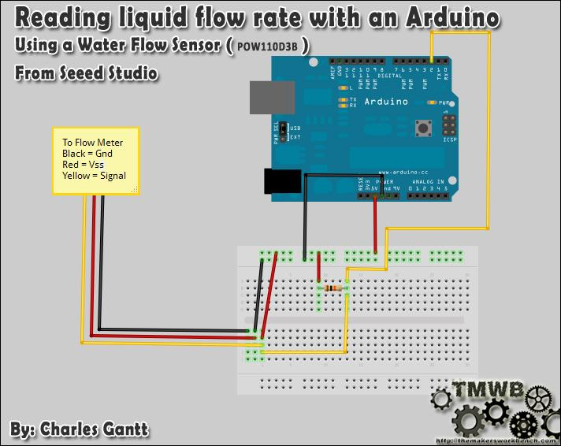
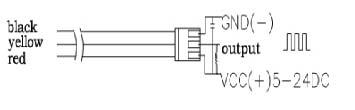

Water flow sensor consists of a plastic valve body, a water rotor, and a hall-effect sensor. When water flows through the rotor, rotor rolls. Its speed changes with different rate of flow. The hall-effect sensor outputs the corresponding pulse signal. This one is suitable to detect flow in water dispenser or coffee machine.
We have a comprehensive line of water flow sensors in different diameters. Check them out to find the one that meets your need most.

| Mini. Wokring Voltage | DC 4.5V |
| Max. Working Current | 15mA(DC 5V) |
| Working Voltage | 5V～24V |
| Flow Rate Range | 0.3~6L/min |
| Load Capacity | ≤10mA(DC 5V) |
| Operating Temperature | ≤80℃ |
| Liquid Temperature | ≤120℃ |
| Operating Humidity | 35%～90%RH |
| Water Pressure | ≤2.0MPa |
| Storage Temperature | -25℃～+80℃ |
| Storage Humidity | 25%～95%RH |
Note: This example is abstracted from the forum, which was done by Charles Gantt. Thanks for his contribution.Let's see how it works.
This is part of a project I have been working on and I thought I would share it here since there have been a few threads on how to read water flow rate in liters per hour using the Water Flow Sensor found in the Seeed Studio Depo. It uses a simple rotating wheel that pulses a hall effect sensor. By reading these pulses and implementing a little math, we can read the liquids flow rate accurate to within 3%. The threads are simple G3/4 so finding barbed ends will not be that hard.
You will need Seeeduino / Arduino ,Water Flow Sensor,10K resistor,a breadboard and some jumper wires.
Wiring up the Water Flow Sensor is pretty simple. There are 3 wires: Black, Red, and Yellow. Black to the Seeeduino's ground pin Red to Seeeduino's 5v pin The yellow wire will need to be connected to a 10k pull up resistor.and then to pin 2 on the Seeeduino.
Here is a fritzing diagram I made to show you how to wire it all up.

Once you have it wired up you will need to upload the following code to your Seeeduino. Once it is uploaded and you have some fluid flowing through the Water Flow Sensor, you can open the serial monitor and it will display the flow rate, refreshing every second.
// reading liquid flow rate using Seeeduino and Water Flow Sensor from Seeedstudio.com // Code adapted by Charles Gantt from PC Fan RPM code written by Crenn @thebestcasescenario.com // http:/themakersworkbench.com http://thebestcasescenario.com http://seeedstudio.com volatile int NbTopsFan; //measuring the rising edges of the signal int Calc; int hallsensor = 2; //The pin location of the sensor void rpm () //This is the function that the interupt calls { NbTopsFan++; //This function measures the rising and falling edge of the hall effect sensors signal } // The setup() method runs once, when the sketch starts void setup() // { pinMode(hallsensor, INPUT); //initializes digital pin 2 as an input Serial.begin(9600); //This is the setup function where the serial port is initialised, attachInterrupt(0, rpm, RISING); //and the interrupt is attached } // the loop() method runs over and over again, // as long as the Arduino has power void loop () { NbTopsFan = 0; //Set NbTops to 0 ready for calculations sei(); //Enables interrupts delay (1000); //Wait 1 second cli(); //Disable interrupts Calc = (NbTopsFan * 60 / 7.5); //(Pulse frequency x 60) / 7.5Q, = flow rate in L/hour Serial.print (Calc, DEC); //Prints the number calculated above Serial.print (" L/hour\r\n"); //Prints "L/hour" and returns a new line }
You can refer our forum for more details about Reading Water Flow rate with Water Flow Sensor.
The external diameter of thread the connections use is 1.4mm.

Pulse frequency (Hz) in Horizontal Test= 7.5Q, Q is flow rate in L/min. (Results in +/- 3% range)
| Output pulse high level | Signal voltage >4.5 V( input DC 5 V) |
| Output pulse low level | Signal voltage <0.5V( input DC 5V) |
| Precision | 3% (Flow rate from 1L/min to 10L/min) |
| Output signal duty cycle | 40%～60% |